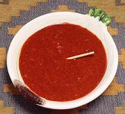

|
Merquén SalsaChile - Salsa de Merquén | ||||
| Makes: Effort: Sched: DoAhead: |
1/3 cup * 10 min Yes |
A smoky moderately hot chili sauce / dip from southern Chile. This is about as hot as anything gets in Chile. | |||
|
3 2 2 1 3 1/3 |
T T cl t T t |
Merquén (1) Lemon Juice Garlic Olive Oil Water Salt |
Make - (10 min)
|